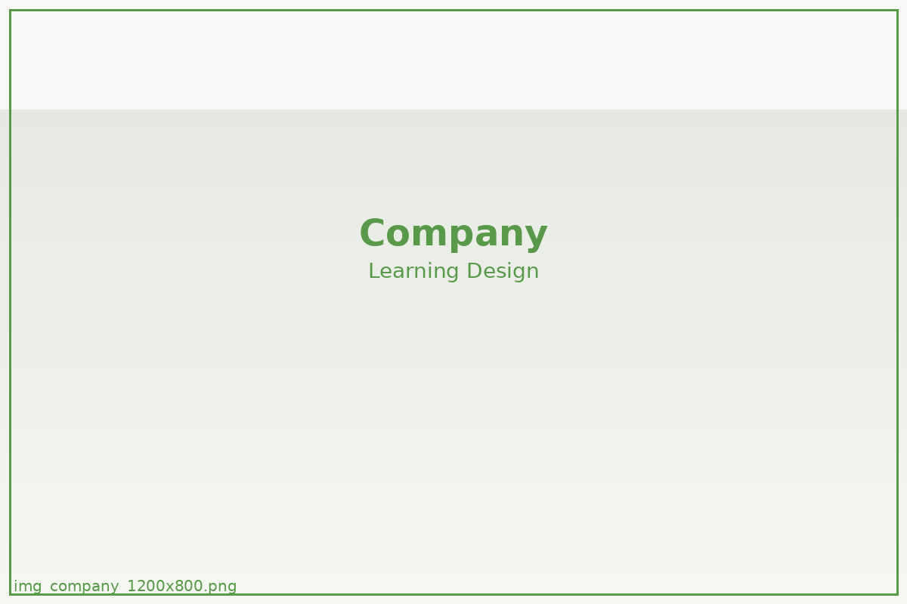

スタジオ概要
- 名称NEXT FIELD EDUCATION
- 始動2011年
- 領域ラボ設計 / 観測研究 / 共同開発
- 拠点東京 / 京都 / オンライン
研究開発、ラボ設計、記録運用を横断して行うNEXT FIELD EDUCATIONのスタジオ概要です。

NEXT FIELD EDUCATIONは、学びの場で起きる小さな変化をどう記録するかを試行し続けてきたスタジオです。教える内容そのものより、変化の残し方を設計することを重視しています。
ラボ開発、記録プロトコルの設計、共同研究までを一体で進めながら、学びの場に新しい方法論を持ち込んでいます。